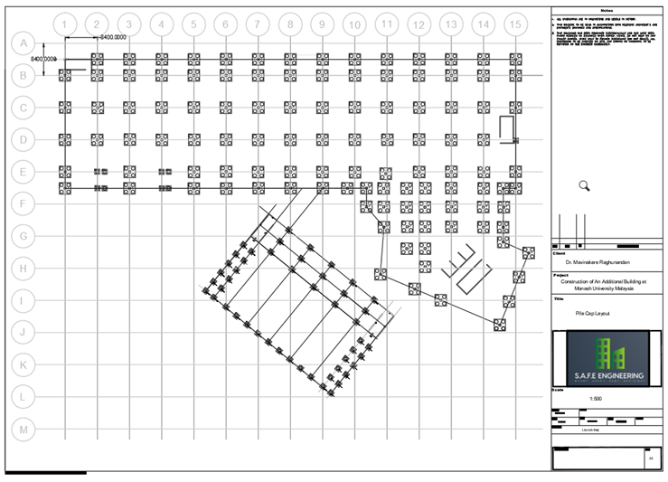

Design Project/ Capstone Project
The most challenging project of my degree coursework

This project cover the detail design for the construction of new buildings in Monash University Malaysia to cater the increasing student population and to support students’ wellbeing and sports. A total of two buildings are designed. The project is sited at Jalan Lagoon Selatan at Bandar Sunway, 47600 Selangor, Malaysia. The design and analysis are carried out in five aspects which are structural, geotechnical, water, traffic, and project management.
As the team leader of this project, I have to manage the team's progress, and liaise with the "Client" to monitor for any possible changes to the design. I was also the structural and infrastructure designer in this project.
